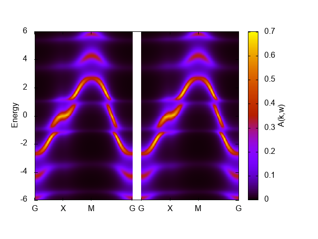

The first example: 2D Hubbard model¶
The first example is the two-dimensional Hubbard model. We first use the exact diagonalization solver pomerol and see the influence of the Coulomb repulsion U on the single-particle excitations. A better result can be obtained using the CT-QMC solver, which will be explained later.
The file below shows the full input file for solving the 2D Hubbard model:
[model]
seedname = square
lattice = square
norb = 1
nelec = 1.0
t = -1.0
kanamori = [(4.0, 0.0, 0.0)]
nk0 = 8
nk1 = 8
nk2 = 1
[system]
T = 0.1
n_iw = 1000
fix_mu = True
mu = 2.0
[impurity_solver]
name = pomerol
exec_path{str} = pomerol2dcore
n_bath{int} = 3
fit_gtol{float} = 1e-6
[control]
max_step = 100
sigma_mix = 0.5
converge_tol = 1e-5
[post.anacont]
solver = pade
omega_max = 6.0
omega_min = -6.0
Nomega = 401
[post.anacont.pade]
n_min = 20
n_max = 1000
iomega_max = 1e+20
eta = 0.1
[post.spectrum]
knode = [(G,0,0,0),(X,0.5,0,0),(M,0.5,0.5,0),(G,0,0,0)]
nk_line = 100
broadening = 0.4
The parameter exec_path{str} in [impurity_solver] block needs to be edited, if pomerol2dcore executable is not in your path: Please specify the full path to pomerol2dcore.
Pre-process : dcore_pre¶
We first generate an HDF5 file that is necessary for DMFT calculations.
The script dcore_pre is invoked for this purpose:
$ dcore_pre dmft_square.ini
Then, an HDF5 file named seedname.h5 (square.h5 in the present case) is generated.
DMFT loop : dcore¶
One can perform a DMFT self-consistent calculation with dcore program.
In this tutorial, we use the exact diagonalization solver just for simplicity.
One can run the program by
$ dcore dmft_square.ini --np 1
with a single process.
It takes several minutes. You may run it with MPI to reduce the computational time.
Results for the self-energy and Green’s function in each iteration are accumulated into an HDF5 file named seedname.out.h5 (square.out.h5 in the present case).
One can check the convergence of DMFT iterations using dcore_check program as follows:
$ dcore_check dmft_square.ini
dcore_check program prints the value of the chemical potential at each iteration on the standard output:
@ Reading dmft_square_pomerol.ini ...
Loading dc_imp and dc_energ...
Loading Sigma_iw...
Total number of Iteration: 13
Iter Chemical-potential
1 2.0
2 2.0
3 2.0
4 2.0
5 2.0
6 2.0
7 2.0
8 2.0
9 2.0
10 2.0
11 2.0
12 2.0
13 2.0
Output check_test/sigma.dat
Output check_test/sigma_ave.png
Output check_test/iter_mu.dat
Output check_test/iter_mu.png
Output check_test/iter_sigma-ish0.png
Output check_test/iter_sigma.dat
Done
The value of the chemical potential does not change now because fix_mu = True is specified. dcore_check generates several figures as well as data files in text format.
For instance, check/iter_sigma-ish0.png shows how the renormalization factor converges for each orbital.

The iteration is terminated when the diff (lower figure) reaches converge_tol = 1e-5 at the 13th iteration.
Analytical continuation of the self-energy : dcore_anacont¶
The self-energy is calculated in the imaginary-time domain in the DMFT loop and saved as seedname_sigma_iw.npz.
The analytical continuation from Matsubara frequency to real frequencies is required to calculate the spectral function.
DCore provides a program dcore_anacont for this purpose.
Parameters for the analytical continuation are specified in the [post.anacont] block in the input file.
omega_min and omega_max is the minimum and maximum frequency for the output.
Nomega is the number of frequency points.
solver is the solver for the analytical continuation; “pade” is the Pade approximation and “spm” is the sparse modeling method.
Hyperparameters for the solver can be specified in the [post.anacont.pade] or [post.anacont.spm] block.
$ dcore_anacont dmft_square.ini
The result is stored in post/sigma_w.npz.
Spectral function : dcore_spectrum¶
After calculating the self-energy on the real-frequency axis, we can also calculate other real-frequency quantities such as the density of states and the momentum-dependent single-particle excitations using dcore_spectrum program.
The calculation is done by the following command:
$ dcore_spectrum dmft_square.ini --np 1
After finishing the calculation,
results are stored in post directory.
The data of momentum-resolved spectral functions are output into akw.dat.
We can easily plot the result by using the script file akw.gp for gnuplot:
$ cd post
$ gnuplot akw.gp
In the graph shown below, the left and right panels correspond to up-spin and down-spin components, respectively.
{kind=link}
Here, we have tuned the range of the coloar bar by the command set cbrange[0:0.8] to get better figure.
The band width seems reduced than the noninteracting one, 8, but the artificial structure around E=1 and -1 makes it difficult to judge.
The numerical result for the density of states is stored in dos.dat.
We can plot it using gnuplot as follows:
set xlabel "Energy"
set ylabel "DOS"
plot "dos.dat" w l
The result is shown below.

Another impurity solver: CTHYB-SEG¶
The spectrum presented above shows some artificial features due to a limited number of the bath sites. The infinite limit of the baths (a continuous hybridization function) can be treated with the CT-QMC method. Here, we use the hybridization expansion CT-QMC solver ALPS/cthyb-seg.
The file below shows the input file for ALPS/cthyb-seg:
[model]
seedname = square
lattice = square
norb = 1
nelec = 1.0
t = -1.0
kanamori = [(4.0, 0.0, 0.0)]
nk0 = 8
nk1 = 8
nk2 = 1
[system]
T = 0.1
n_iw = 1000
fix_mu = True
mu = 2.0
[impurity_solver]
name = ALPS/cthyb-seg
exec_path{str} = /path/to/alps_cthyb
cthyb.TEXT_OUTPUT{int} = 1
cthyb.MEASUREMENT_freq{int} = 1
MEASURE_gw{int} = 1
MAX_TIME{int} = 60
cthyb.N_MEAS{int} = 50
cthyb.THERMALIZATION{int} = 100000
cthyb.SWEEPS{int} = 100000000
[control]
max_step = 20
sigma_mix = 0.5
time_reversal = True
[post.anacont]
solver = pade
omega_max = 6.0
omega_min = -6.0
Nomega = 401
[post.anacont.pade]
n_min = 20
n_max = 1000
iomega_max = 1e+20
eta = 0.1
[post.spectrum]
knode = [(G,0.0,0.0,0.0),(X,0.5,0.0,0.0),(M,0.5,0.5,0.0),(G,0.0,0.0,0.0)]
nk_line = 100
broadening = 0.0
/path/to/alps_cthyb in [impurity_solver] exec_path{str} should be replaced with a full path to alps_cthyb executable in your environment.
Unlike in the ED solver, we do not use converge_tol parameter, since the automatic convergence check requires a special care for QMC solvers.
The workflow of the DCore calculation is the same as the ED solver.
Please note that it takes a longer time to run dcore command than the ED solver. It takes about 20 minutes to finish the calculation because each QMC calculation takes 60 seconds (MAX_TIME{int} = 60), and the maximum number of the DMFT iterations is 20 (max_step = 20).
The figures below show the momentum-resolved spectral functions and the density of states computed after the self-consistent calculations using 8 processes (--np 8):
{kind=link}

The artificial features observed in the ED solver has gone. This graph shows characteristics for correlated bands such as renormalized band width, low-energy quasiparticles (sharp peak), and broadening away from the Fermi level.
We note that spectra computed using the Pade analytical continuation is extremely sensitive to statistical errors. For this reason, this figure might not be reproduced even with the same input. In such cases, try improving the QMC accuracy by increasing the number of MPI processes or by increasing MAX_TIME{int} parameter.